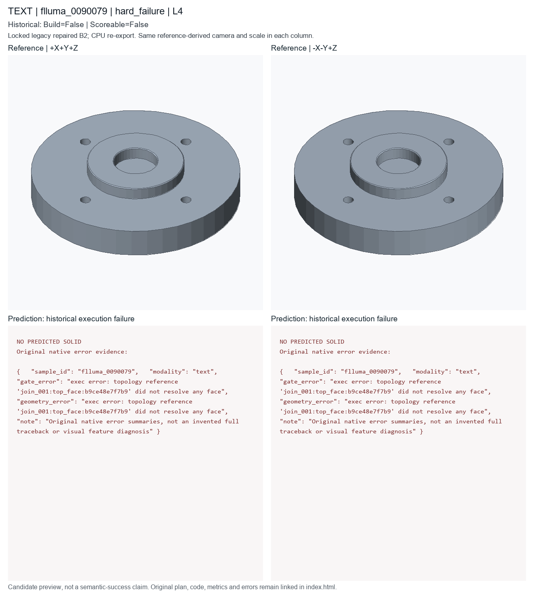

hard_failure; L4; historical deployed repaired B2. Candidate status is unchanged.
Dominant first-failure stage and exact native error; median reference feature count; sample-ID tie break
These are new CPU exports of locked historical code, not newly generated model predictions or recovered original temporary STEP files. Executable does not mean semantically accurate. Historical seed/checkpoint-byte binding remains unresolved.

A built from 6 ordered CAD features, approximately 37.19 by 37.215 by 9.6 mm. Build a revolved hub mount with four bolt holes and chamfered edges.
PART flluma_0005000 CAT revolved_hub_mount UNITS mm SEED 20265514 PARAM chamfer_distance 0.14 MIN 0.1 MAX 1 SEM edge_break PARAM flange_radius 18.55 MIN 12 MAX 50 SEM primitive_radius PARAM flange_thickness 3.1 MIN 2 MAX 14 SEM thickness PARAM hole_radius 1.14 MIN 0.5 MAX 4 SEM hole_radius PARAM thickness 9.6 MIN 2 MAX 18 SEM thickness F sketch_001 OP_SKETCH SEM primitive_profile ROLE profile_definition PARAMS points=[[-6.48,-18.13],[6.48,-18.13],[6.48,16.35],[22.03,16.35],[22.03,-8.41],[-22.03,-8.41],[-22.03,16.35],[-6.48,16.35]] profile_type=polygon F cylinder_001 OP_CYLINDER SEM flange ROLE secondary_feature PARAMS height=@thickness radius=@flange_radius F translate_001 OP_TRANSLATE SEM placement ROLE secondary_feature DEP cylinder_001 PARAMS offset=[0,0,4.65] F cylinder_002 OP_CYLINDER SEM boss ROLE secondary_feature PARAMS height=4.65 radius=8.18 F translate_002 OP_TRANSLATE SEM placement ROLE secondary_feature DEP cylinder_002 PARAMS offset=[25.15,0,4.575] F boolean_cut_001 OP_FACE_EXTRUDE_CUT SEM boolean_cut ROLE secondary_feature DEP sketch_001,translate_001,target=cylinder_001 F boolean_cut_002 OP_BOOLEAN_CUT SEM boolean_cut ROLE secondary_feature DEP boolean_cut_001,translate_002,target=cylinder_002 F hole_001 OP_HOLE_PATTERN SEM mounting_hole ROLE functional_feature DEP boolean_cut_002 TARGET boolean_cut_002.top_face PARAMS count=4 depth=THROUGH positions=[[0,-11.56],[14.98,0],[0,11.56],[-14.98,0]] radius=@hole_radius F chamfer_001 OP_CHAMFER SEM edge_break ROLE finishing_feature DEP hole_001 TARGET hole_001.top_outer_edges PARAMS distance=@chamfer_distance END
# Literal first40 lines of executed prediction; full program is prediction.py
params = Parameters()
params.add('chamfer_distance', 0.14, min=0.1, max=1.0, semantic_type='edge_break')
params.add('flange_radius', 18.55, min=12.0, max=50.0, semantic_type='primitive_radius')
params.add('flange_thickness', 3.1, min=2.0, max=14.0, semantic_type='thickness')
params.add('hole_radius', 1.14, min=0.5, max=4.0, semantic_type='hole_radius')
params.add('thickness', 9.6, min=2.0, max=18.0, semantic_type='thickness')
part = Part('flluma_0005000', category='revolved_hub_mount', parameters=params, seed=20265514, sample_id='flluma_0005000', units='mm')
sketch = part.sketch_polygon(name='hub_revolve_profile', points=[[-6.48, -18.13], [6.48, -18.13], [6.48, 16.35], [22.03, 16.35], [22.03, -8.41], [-22.03, -8.41], [-22.03, 16.35], [-6.48, 16.35]], closed=True, semantic_type='primitive_profile')
revolved = part.revolve(name='revolved_hub_mount', profile=sketch, semantic_type='revolved_solid')
cylinder = part.cylinder(name='hub_mount_flange_seed', radius=params['flange_radius'], height=params['flange_thickness'], semantic_type='flange')
join = part.boolean_join(name='join_hub_to_flange', target=cylinder, tool=revolved, semantic_type='joined_boss')
holes = part.hole_pattern(name='hub_flange_bolt_holes', target=join.top_face(), radius=params['hole_radius'], depth='through', positions=[[0.0, 0.0], [14.98, 0.0], [0.0, 14.98], [-14.98, 0.0]], semantic_type='bolt_hole_pattern')
chamfer = part.chamfer(name='hub_mount_edge_chamfer', target=holes.top_outer_edges(), distance=params['chamfer_distance'], semantic_type='outer_chamfer')
__all__ = ['part']
{
"sample_id": "flluma_0090079",
"modality": "text",
"gate_error": "exec error: topology reference 'join_001:top_face:b9ce48e7f7b9' did not resolve any face",
"geometry_error": "exec error: topology reference 'join_001:top_face:b9ce48e7f7b9' did not resolve any face",
"note": "Original native error summaries, not an invented full traceback or visual feature diagnosis"
}